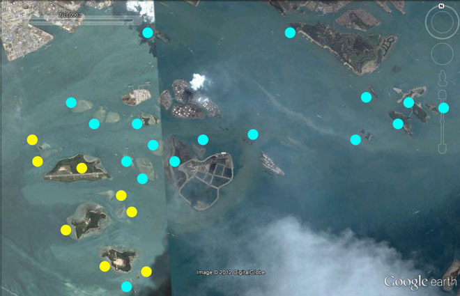

|
|
| Singapore's
Southern shores Where? What habitats? What biodiversity? |

|
Past
conservation efforts include those in 1987-1991 by The
Reef Survey and Conservation Project, a project undertaken by the
Republic of Singapore Yacht Club (RSYC), Singapore Institute of
Biology (SIBiol) and Singapore Underwater Federation (SUF). Among
the results was identifying and targeting four reef areas as good
enough to merit some form of conservation: St John's group of islands,
Pulau Hantu and patch reefs, Pulau Semakau and patch reefs, live
firing islands including Raffles Lighthouse. More details on this
and other conservation efforts on the Coral
Reefs of Singapore website. |